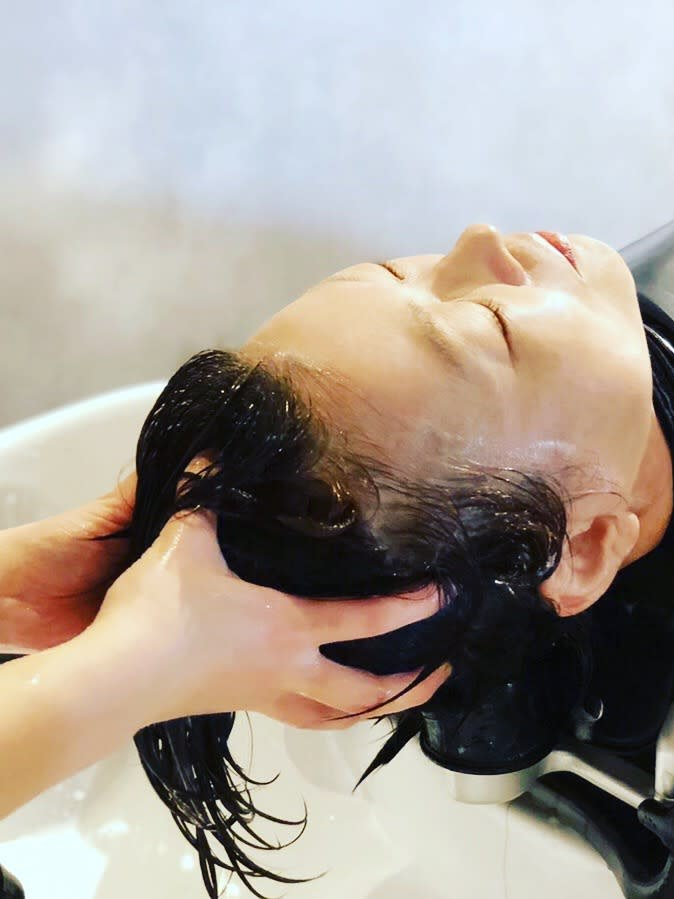

About Us
10年先も、
好きでいられる髪へ。
Capiz は「素髪（すがみ）」を軸にしたサロンです。トリートメントやスタイリング剤を重ねていくのではなく、頭皮と髪そのものの状態を整えていくことを考えます。
カット、カラー、パーマ、ストレート。どのメニューにも、頭皮と髪のクレンジング、保水、施術後のアルカリ除去が入ります。髪と頭皮に実際に触れて状態を確かめ、この先どうしていくのがよいかを一緒に決めていきます。ご自宅での洗い方やブラッシングの仕方もあわせてお伝えします。縮毛矯正の回数を減らしていきたい、という方のご相談も承ります。
